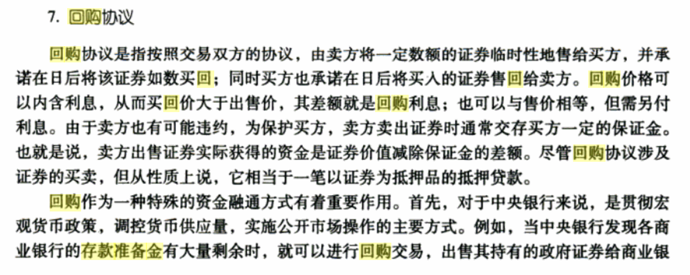
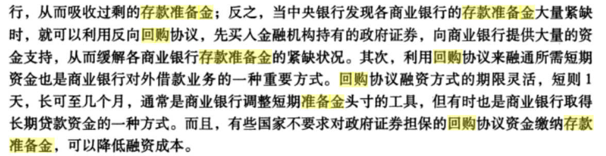

从总体上看，国债投资策略可以分为消极型投资策略和积极型投资策略两种，每位投资者可以根据自己资金来源和用途来选择适合自己的投资策略。
具体地，在决定投资策略时，投资者应该考虑自身整体资产与负债的状况以及未来现金流的状况，期以达到收益性、安全性与流动性的最佳结合。 一般而言，投资者应在投资前认清自己，明白自己是积极型投资者还是消极型投资者。积极型投资者一般愿意花费时间和精力管理他们的投资，通常他们的投资收益率较高；而消极型投资者一般只愿花费很少的时间和精力管理他们的投资，通常他们的投资收益率也相应地较低。有一点必须明确，决定投资者类型的关键并不是投资金额的大小，而是他们愿意花费多少时间和精力来管理自己的投资。对大多数投资者来说，一般都是消极型投资者，因为他们都缺少时间和缺乏必要的投资知识。在这里，我们并不想介绍很深的理论，只是向读者提示几种比较实用的操作方法。
消极型投资策略
消极型投资策略是一种不依赖于市场变化而保持固定收益的投资方法，其目的在于获得稳定的债券利息收入和到期安全收回本金。因此，消极型投资策略也常常被称作保守型投资策略。在这里我们介绍最简单的消极型国债投资策略-购买持有法，并介绍几种建立在此基础上的国债投资技巧。
1.购买持有-最简单的国债投资方法
购买持有是最简单的国债投资策略，其步骤是：在对债券市场上所有的债券进行分析之后，根据自己的爱好和需要，买进能够满足自己要求的债券，并一直持有到到期兑付之日。在持有期间，并不进行任何买卖活动。
这种投资策略虽然十分粗略，但却有其自身的好处：
（1）这种投资策略所带来的收益是固定的，在投资决策的时候就完全知道，不受市场行情变化的影响。它可以完全规避价格风险，保证获得一定的收益率。
（2）如果持有的债券收益率较高，同时市场利率没有很大的变动或者逐渐降低，则这种投资策略也可以取得相当满意的投资效果。
（3）这种投资策略的交易成本很低。由于中间没有任何买进卖出行为，因而手续费很低，从而也有利于提高收益率。因此，这种购买持有的投资策略比较适用于市场规模较小、流动性比较差的国债，并且更适用于不熟悉市场或者不善于使用各种投资技巧的投资者。
具体在实行这种投资策略时，投资者应注意以下两个方面：首先，根据投资者资金的使用状况来选择适当期限的债券。一般情况下，期限越长的债券，其收益率也往往越高。但是期限越长，对投资资金锁定的要求也就越高，因此最好是根据投资者的可投资资金的年限来选择债券，使国债的到期日与投资者需要资金的日期相近。其次，投资者投资债券的金额也必须由可投资资金的数量来决定。一般在购买持有策略下，投资者不应该利用借入资金来购买债券，也不应该保留剩余资金，而是最好将所有准备投资的资金投资于债券，这样就能保证获得最大数额的固定收益。
但是，购买持有这种投资策略也有其不足之处。首先，从本质上看，这是一种比较消极的投资策略。在投资者购进债券后，他可以毫不关心市场行情的变化，可以漠视市场上出现的投资机会，因而往往会丧失提高收益率的机会。其次，虽然投资者可以获得固定的收益率，但是，这种被锁定的收益率只是名义上的，如果发生通货膨胀，那么投资者的实际投资收益率就会发生变化，从而使这种投资策略的价值大大下降。特别是在通货膨胀比较严重的时候，这种投资策略可能会带来比较大的损失。最后，也是最常见的情况是，由于市场利率的上升，使得购买持有这种投资策略的收益率相对较低。由于不能及时卖出低收益率的债券，转而购买高收益率的债券，因此，在市场利率上升时，这种策略会带来损失。但是无论如何，投资者也能得到原先约定的收益率。
除了购买持有以外，还有以下几种常用的消极型国债投资技巧。
2. 梯形投资法
所谓梯形投资法，又称等期投资法，就是每隔一段时间，在国债发行市场认购一批相同期限的债券，每一段时间都如此，接连不断，这样，投资者在以后的每段时间都可以稳定地获得一笔本息收入。
※例 Peter的投资策略
Peter在1992年6月购买了1992年发行的3年期的债券，在1993年3月购买了1993年发行的3年期的债券，在1994年4月购买1994年发行的3年期债券。
这样，在1995年7月，Peter就可以收到1992年发行的3年期债券的本息和，此时，该Peter又可以购买1995年发行的3年期国债，这样，他所持有的三种债券的到期期限又分别为1年、2年和3年。如此滚动下去，Peter就可以每年得到投资本息和，从而既能够进行再投资，又可以满足流动性需要。
只要Peter不停地用每年到期的债券的本息和购买新发行的3年期债券，则其债券组合的结构就与原来的相一致。
梯形投资法的优点在于，采用此种投资方法的投资者能够在每年中得到本金和利息，因而不至于产生很大的流动性问题，不至于急着卖出尚未到期的债券，从而不能保证收到约定的收益。同时，在市场利率发生变化时，梯形投资法下的投资组合的市场价值不会发生很大的变化，因此国债组合的投资收益率也不会发生很大的变化。此外，这种投资方法每年只进行一次交易，因而交易成本比较低。
3. 三角投资法
所谓三角投资法，就是利用国债投资期限不同所获本息和也就不同的原理，使得在连续时段内进行的投资具有相同的到期时间，从而保证在到期时收到预定的本息和。这个本息和可能已被投资者计划用于某种特定的消费。三角投资法和梯形投资法的区别在于，虽然投资者都是在连续时期（年份）内进行投资，但是，这些在不同时期投资的债券的到期期限是相同的，而不是债券的期限相同。
※例 Peter的投资策略
Peter决定在2000年进行一次"千禧年"国际旅游，因此，他决定投资国债以便能够确保在千年之交得到所需资金。这样，他可以在1994年投资1994年发行的5年期债券，在1996年购买1996年发行的3年期债券，在1997年购买1997年发行的2年期债券。这些债券在到期时都能收到预定的本息和，并且都在1999年到期，从而能保证有足够资金来实现"千禧之梦"。
这种投资方法的特点是，在不同时期进行的国债投资的期限是递减的，因此被称作三角投资法。它的优点是能获得较固定收益，又能保证到期得到预期的资金以用于特定的目的。
~~~~~~~~~~~~~~以上是消极型投资策略 以下为积极型投资策略 我还是我~~~~~~~~~~~~~~~~~~
积极型投资策略-利率预测法
积极型投资策略，是指投资者通过主动预测市场利率的变化，采用抛售一种国债并购买另一种国债的方式来获得差价收益的投资方法。这种投资策略着眼于债券市场价格变化所带来的资本损益，其关键在于能够准确预测市场利率的变化方向及幅度，从而能准确预测出债券价格的变化方向和幅度，并充分利用市场价格变化来取得差价收益。因此，这种积极型投资策略一般也被称作利率预测法。这种方法要求投资者具有丰富的国债投资知识及市场操作经验，并且要支付相对比较多的交易成本。投资者追求高收益率的强烈欲望导致了利率预测法受到众多投资者的欢迎，同时，市场利率的频繁变动也为利率预测法提供了实践机会。
利率预测法的具体操作步骤是这样的：投资者通过对利率的研究获得有关未来一段时期内利率变化的预期，然后利用这种预期来调整其持有的债券，期以在利率按其预期变动时能够获得高于市场平均的收益率。因此，正确预测利率变化的方向及幅度是利率预测投资法的前提，而有效地调整所持有的债券就成为利率预测投资法的主要手段。
1. 利率预测及其方法
由前面的分析可知，利率预测已成为积极型投资策略的核心。但是利率预测是一项非常复杂的工作。利率作为宏观经济运行中的一个重要变量，其变化受到多方面因素的影响，并且这些影响因素对利率作用的方向、大小都十分难以判断。
从宏观经济的角度看，利率反映了市场资金供求关系的变动状况。在经济发展的不同阶段，市场利率有着不同的表现。在经济持续繁荣增长时期，企业家开始为了购买机器设备、原材料、建造工厂和拓展服务等原因而借款，于是，会出现资金供不应求的状况，借款人会为了日益减少的资金而进行竞争，从而导致利率上升；相反，在经济萧条、市场疲软时期，利率会随着资金需求的减少而下降。利率除了受到整体经济状况的影响之外，还受到以下几个方面的影响：
（1）通货膨胀率
通货膨胀率是衡量一般价格水平上升的指标。一般而言，在发生通货膨胀时，市场利率会上升，以抵消通货膨胀造成的资金贬值，保证投资的真实收益率水平。而借款人也会预期到通货膨胀会导致其实际支付的利息的下降，因此，他会愿意支付较高的名义利率，从而也会导致市场利率水平的上升。
（2）货币政策
货币政策是影响市场利率的重要因素。货币政策的松紧程度将直接影响市场资金的供求状况，从而影响市场利率的变化。一般而言，宽松的货币政策，如增强货币供应量、放松信贷控制等都将使市场资金的供求关系变得宽松，从而导致市场利率下降。相反，紧的货币政策，如减少货币供应量，加强信贷控制等都将使市场资金的供求关系变得紧张，从而导致市场利率上升。
（3）汇率变化
在开放的市场条件下，本国货币汇率上升会引起国外资金的流入和对本币的需求上升，短期内会引起本国利率的上升；相反，本国货币汇率下降会引起外资流出和对本币需求的减少。短期内会引起本国利率下降。
我国的利率体系受到经济发展水平的影响，呈现一种多利率并存的格局，各资金市场是分割的，资金在市场间的流动受到较大的限制。目前，我国主要有以下的两种利率：
（1）官方利率。
这是由中国人民银行确定的不同期限或不同类别的存、贷款利率，即管制利率。这是我国金融市场上的主导利率，对整个金融市场，包括债券市场都有较大的影响。
（2）场外无组织的资金拆借利率
由于某些金融机构和工商企业缺乏正常的融资渠道，尤其是非国有企业在信贷上受到限制，使得它们只能通过私下资金的拆借来融资。由于这些拆借主体的资金来源和资金获得条件都不尽相同，因而利率十分混乱。当然，在对非国有经济的政策支持和对私下融资的限制、打击下，这种状况会逐渐得以改善。
在考虑影响国债价格的利率时，应注重分析官方利率和国债回购、同业拆借市场利率。其中，官方利率变动次数虽然较少，但由于每次变动的幅度都较大，加上它在整个金融市场上的地位，因而对债券价格的影响是很大的，并且会持续很长的时间。而国债回购、同业拆借市场利率在每个交易日都在变动，且变动幅度比较小，因而对于债券价格的影响的持续时间不长，程度也不大。
投资者在对社会经济运行态势和中央银行货币政策抉择作了综合分析后，可尝试对未来市场利率的变动方向和变动幅度做出较为理性的预测，并据此做出自己的国债投资决策。
2. 债券调整策略
在预测了市场利率变化的方向和幅度之后，投资者可以据此对其持有的债券进行重新组合。这是因为，市场利率将直接决定债券的投资收益率。很显然，债券投资的收益率应该同市场利率密切相关：在市场利率上升时，债券投资的要求收益率也会相应上升，在市场利率下降时，债券的要求收益率也会相应下降。一般地，在计算债券价格时，我们就直接用市场利率作为贴现率，对债券的未来现金流进行贴现。因此，我们可以对市场利率变化和债券价格变化之间的关系做出准确的判断，从而据此来调整持有的债券。调整组合的目的是，在对既定的利率变化方向及其幅度做出预期后，使持有的债券的收益率最大化。这里，我们不加解释地给出一些调整债券的原则，其中的原理在第五章已经有了明确的阐释。
（1）由于市场利率与债券的市场价格呈反向变动关系，因此，在市场利率上升时，债券的市场价格会下降，而在市场利率下降时，债券的市场价格会上升，因而前者的正确调整策略是卖出所持有的债券，而后者的正确调整策略是买入债券。
※例：上交所的9908券
该券在2000年2月28日的收盘价为99.38元，计算得到其相应的到期收益率为3.55%。 若2月29日，市场利率下降到3.29%，则以9908券的价格将上升到101.49元，上涨了2.11元；若2月29日，市场利率上升到3.81%，则9908券的价格将下降到97.38元，下跌了2.2元。
但是问题在于，债券的种类有很多，它们的期限、票面利率都是各不相同的，那么到底应该选择哪种类型的债券呢？下面两个策略将告诉我们如何选择不同类型（不同期限、不同票面利率）的债券。
（2）债券的期限同债券价格变化之间的关系是有规律可循的：无论债券的票面利率的差别有多大，在市场利率变化相同的情况下，期限越长的债券，其价格变化幅度越大。因此，在预测市场利率下降时，应尽量持有能使价格上升幅度最大的债券，即期限比较长的债券。也就是说，在预测市场利率将下跌时，应尽量把手中的期限较短的债券转换成期限较长的债券，因为在利率下降相同幅度的情况下，这些债券的价格上升幅度较大。
相反，在预测市场利率上升时，若投资者仍想持有债券，则应该持有期限较短的债券，因为在利率上升相同幅度的情况下，这些债券的价格下降幅度较小，因而风险较小。
（3）债券的票面利率同债券的价格变化之间也是有规律可循的：在市场利率变化相同的情况下，息票利率较低的债券所发生的价格变化幅度（价格变化百分比）会比较大，因此，在预测利率下跌时，在债券期限相同的情况下，应尽量持有票面利率低的债券，因为这些债券的价格上升幅度（百分比）会比较大。但是这一规律不适用于周年期的债券。
因此，我们可以得到有关债券调整策略的总原则：在判断市场利率将下跌时，应尽量持有能使价格上升幅度最大的债券，即期限比较长、票面利率比较低的债券。也就是说，在预测市场利率将下跌时，应尽量把手中的短期、高票面利率国债转换成期限较长的、低息票利率的债券，因为在利率下降相同幅度的情况下，这些债券的价格上升幅度较大。
反之，若预测市场利率将上升，则应尽量减少低息票利率、长期限的债券，转而投资高息票利率、短期限的债券，因为这些债券的利息收入高，期限短，因而能够很快地变现，再购买高利率的新发行债券，同时，这些债券的价格下降幅度也相对较小。
需指出的是，利率预测法作为一种积极的国债投资方法，虽然能够获得比较高的收益率，但是这种投资方法是具有很大风险的。一旦利率向相反的方向变动，投资者就可能遭受比较大的损失，因此，只对那些熟悉市场行情、具有丰富操作经验的人才适用。初学的投资者不适宜采用此种投资方法。
~~~~~~~~~~~~~~以上为积极型投资策略 以下是其他技巧 咳咳~~~~~~~~~~~~~~~~~~
其他若干实用的积极型国债投资技巧
（一）等级投资计划法
等级投资计划法，是公式投资计划法中最简单的一种，它由股票投资技巧而得来，方法是投资者事先按照一个固定的计算方法和公式计算出买入和卖出国债的价位，然后根据计算结果进行操作。其操作要领是"低进高出"，即在低价时买进、高价时卖出。只要国债价格处于不断波动中，投资者就必须严格按照事先拟订好的计划来进行国债买卖，而是否买卖国债则取决于国债市场的价格水平。具体地，当投资者选定一种国债作为投资对象后，就要确定国债变动的一定幅度作为等级，这个幅度可以是一个确定的百分比，也可以是一个确定的常数。每当国债价格下降一个等级时，就买入一定数量的国债；每当国债价格上升一个等级时，就卖出一定数量的国债。
※例：Peter的投资过程
Peter选择1992年国债作为投资对象（假设1992年国债期限为5年，利率为10.5%.），确定每个等级国债价格变动幅度为2元，第一次购买100张面值为100元的国债，购进价为120元，那么每当国债价格变动到118、120、122、124、126元时，按照国债价格下降时买进、上升时抛出的原则进行操作。根据等级投资计划法，当国债价格下降到118元时，Peter再买进100张国债，当价格继续下降为116元时，Peter继续买进100张国债。但是，当国债价格回升为118元时，Peter就卖出11张国债，在价格继续回升到120元时，Peter就继续卖出100张国债。 这样一个过程结束后，Peter最初投入12 000元购买100张国债，价格为120元，经过一段操作调整后，虽然国债价格最后还是120元，Peter仍持有100张，但他的投入成本已经不是12 000元，而是11 600元了，也就是说，Peter在这一过程中取得了400元的收益。 等级投资计划法适用于国债价格不断波动的时期。由于国债最终还本付息，因此，其价格呈缓慢上升趋势。在运用等级投资法时，一定要注意国债价格的总体走势，并且，国债价格升降幅度即买卖等级的间隔要恰当。国债市场行情波动较大，买卖等级的间隔可以大一些；国债市场行情波动较小，买卖等级间隔就要小一些。如果买卖等级间隔过大，会使投资者丧失买进和卖出的良好时机，而过小又会使买卖差价太小，在考虑手续费因素后，投资者获利不大。同时，投资者还要根据资金实力和对风险的承受能力来确定买卖的批量。
（二）逐次等额买进摊平法
如果投资者对某种国债投资时，该国债价格具有较大的波动性，并且无法准确地预期其波动的各个转折点，投资者可以运用逐次等额买进摊平操作法。
逐次等额买进摊平法就是在确定投资于某种国债后，选择一个合适的投资时期，在这一段时期中定量定期地购买国债，不论这一时期该国债价格如何波动都持续地进行购买，这样可以使投资者的每百元平均成本低于平均价格。运用这种操作法，每次投资时，要严格控制所投入资金的数量，保证投资计划逐次等额进行。
※例：Peter的投资过程
Peter选择1992年5年期国债为投资对象，在确定的投资时期中分5次购买，每次购入国债100张，第1次购入时，国债价格为120元，Peter购入100张；第2次购进时，国债价格为125元，Peter又购入100张；第3次购入时，国债价格为122元，Peter购入100张；第4、第5次Peter的购入价格分别是126元、130元。
到整个投资计划完成时，Peter购买国债的平均成本为124.6元，而此时国债价格已涨至130元，这时如Peter抛出此批国债，将获得收益为： （130－124.6）×500＝2 700（元）。
因为国债具有长期投资价值，所以按照这一方法操作，可以稳妥地获取收益。
（三）金字塔式操作法
与逐次等额买进摊平法不同，金字塔式操作法实际是一种倍数买进摊平法。当投资者第1次买进国债后，发现价格下跌时可加倍买进，以后在国债价格下跌过程中，每一次购买数量比前一次增加一定比例，这样就成倍地加大了低价购入的国债占购入国债总数的比重，降低了平均总成本。由于这种买入方法呈正三角形趋势，形如金字塔形，所以称为金字塔式操作法。
※例：Peter的投资过程
Peter最初以每张120元价格买入1992年5年期国债，投入资金 12 000元；以后在国债价格下降到118元时，他投入23 600元，购买200张国债，当国债价格下降到115元时，他投入34 500元，购入300张国债，这样，他三次投入资金70 100元，买入600张国债，每张平均购入成本为116.83元，如果国债价格上涨，只要超过平均成本价，Peter即可抛出获利。
在国债价格上升时运用金字塔式操作法买进国债，则需每次逐渐减少买进的数量，以保证最初按较低价买入的国债在购入国债总数中占有较大比重。
※例：Peter的投资过程
Peter最初以每张115元的价格购入国债300张；以后在国债价格上升过程中，他按金字塔操作法进行投资，当国债上升到每张118元时，他购入200张，当国债价格上升到每张120元时，他购入100张，这样他投入资金70 100元，购入600张国债，平均成本为每张116.83元，如果国债价格不低于平均成本价，他就可以获益。
国债的卖出也同样可采用金字塔式操作法，在国债价格上涨后，每次加倍抛出手中的国债，随着国债价格的上升，卖出的国债数额越大，以保证高价卖出的国债在卖出国债总额中占较大比重而获得较大盈利。
运用金字塔式操作法买入国债，必须对资金作好安排，以避免最初投入资金过多，以后的投资无法加倍摊平。
1．以静制动投资技巧。股市变化频繁，投资者购进某种股票，股价一直升涨或下跌，常使投资者因应付不及而被下跌套牢或乱了方寸。为减轻或避免过早出卖或廉价出售造成的损失，可采取持股观望态度，待股票升涨到一定高度或下跌转势后再决定出手，这种方法被称为以静制动投资技巧。对于中小投资者来说，此法比较适用，所购进和持有的股票一般应是涨幅平和或者尚未调整价值的股票。
2．渔翁撒网操作技巧和反渔翁撒网操作技巧。渔翁撒网法是一种短线投资策略，是分散组合方法之一。即同时买进多种股票，哪一种股票上涨到能够获利的水平，就先卖出哪种股票。一般是投资者觉得选股困难，且自身资金力量充足时用此法。运用此法，在整个股市出现“牛”市时，各种股票价格轮流上涨，投资者有利可图时抛出某些股票。在“熊”市时，整个股价看跌，但不可能每种股票都跌，由于投资者所持股票种类较多，总有一些价格上涨，从而降低投资者遭受损失的程度。反渔翁撒网投资法，是一种短期的投资行为。投资者有选择地买进各种股票，哪种股票价格看涨就多买一点，哪种股票价格不上涨甚至下跌就卖掉该股。此法的优点是兼渔翁撒网法之长，而能借以获得较多的强势股，使获利能力大为提高。两法互相配合使用，能够弥补前者不足，保证投资收益。
3．守株待兔授资技巧。应属于以静制动投资技巧的范畴，亦称“与市场合一法”，即投资者买进证券交易所上市的多种股票，由于每种股票都有可能上涨获利，即使有涨有跌，损失也不会很大，因此投资者可能不必为选股而太操心。所以，此法一般只在股市把握不定，前景未测时使用。投资者可根据自己的资金实力，选择每种股票只买一个单位，或者每种行业选择一种股票，每种股票各买进若干单位。
~~~~~~~~~~~~~~以上来自智库百科 以下来自维基百科 咳咳~~~~~~~~~~~~~~~~~~
被动投资[编辑]
被动投资的理论基础是建立在有效市场假说基础上的随机游走理论，相对于价值投资或者趋势投资，更大程度上表现出“由市场的不断发展获利”。主要表现形式为投资指数基金。
价值投资[编辑]
价值投资是力求从宏观经济、行业和具体企业的基本面分析企业的内在价值，并以此指导投资的投资方法。其中因倾向不同，又可分为价值投资和成长性投资：
- 价值投资：更倾向于注重投资的安全边际，往往是投资于低市盈率、低市净率的股票。
- 成长性投资：更倾向于注重目标企业的利润成长性和可持续性，往往是投资于高市盈率、高市净率的股票。
这两种投资方法都是以对企业进行资产估值为前提，相对于目前企业价值而言，过低的股价和良好的盈利成长性都是企业投资价值的一部分，成长性可以通过对企业未来的自由现金流量折现来资料化。由于对企业具体的成长性判断准确十分困难，在投资的时候，成长性投资者有必要以一定的安全边际来降低投资风险；价值投资者也必须兼顾企业未来的发展趋势，否则企业价值有可能随着时间的推移逐步缩小，使投资亏损，毕竟以清盘目标公司为手段的价值投资并不多见，所以两者并不矛盾。
著名的价值投资人有彼得·林奇，沃伦·巴菲特等。
趋势投资[编辑]
趋势投资是指通过对买卖双方力量的分析，技术分析等方法研究股票趋势，波段操作，不以企业的基本面做决策依据或主要依据的投资方法。由于其投机性质较明显，又有人称为“投机”。
由于总是有过多的人进行短期的投机交易，致使短期投机交易往往无利可图，再考虑到因频繁买卖而产生的相对高昂的交易费用，使短期投机交易对多数人来讲风险比长期持有的价值投资要大。
回购市场与其他市场之间如何套利：
国债回购市场 和 存款准备金市场 如何套利
国债现券市场
房地产市场
一、“国债+回购”可实现无风险套利
国债回购是一个普通投资者并不很了解的投资品种，其有类似于国债风险低、收益稳定、流动性高的特点。经过多年的观察发现，在国债现券和回购之间长期存在着大约2％～3％的利差，有时甚至高达4％以上，进一步还发现它们之间时常呈现一定的规律性。这种利差的存在为“国债+回购”这种无风险套利操作提供了可能。时至今日，“国债+回购”的操作方法早已被各金融机构广泛运用，以丰富其投资组合和进行风险管理，进而提高资金的使用效率。
利用国债现券与国债回购之间的利差进行无风险套利，既规避了金融风险，又充分利用了资金的使用价值，其收益远高于同期银行存款利率。在目前理财手段并不丰富的背景下，非常值得向普通投资者推荐。
(一)定义解释
国债是由政府发行的债券。与其它类型债券相比较，国债的发行主体是国家，具有极高的信用度，风险较低，被誉为“金边债券”。本文所称国债现券是指由财政部发行的可上市交易的记账式国债。
国债回购是国债现券交易的衍生品种，是一种以国债现券为抵押品拆借资金的信用行为。在交易中买卖双方按照约定的年利率和期限，达成资金拆借协议，融资方(买方)以相应的国债库存作足额抵押，获取一段时间内的资金使用权；融券方(卖方)则在此时间内暂时放弃资金的使用权，从而获得相应期限的国债抵押权，并于到期日收回本金及相应利息。以国债现券做抵押融入资金的行为称为正回购。
（所谓国债逆回购，本质就是一种短期贷款，也就是说，个人通过国债回购市场把自己的资金借出去，获得固定的利息收益；而回购方，也就是借款人用自己的国债作为抵押获得这笔借款，到期后还本付息。通俗来讲，就是将资金通过国债回购市场拆出，其实就是一种短期贷款，即你把钱借给别人，获得固定利息；而别人用国债作抵押，到期还本付息）
(额 这样是不是更难读了... 如果是的话 欢迎反馈~~~)
首先，我们先来理解参与者，分为三方：
1.需要钱的一方：
这一方的手里有国债券，现在需要现金，我们称为正回购方(融资方)；
2.借出钱的一方：
这一方手里有现金，需要找到能让它增值的地方，我们称为逆回购方(融券方)。
（既然是要增值 肯定是大于当时存款利率的）
所谓逆回购，可以理解为你主动表示可以借一笔钱出去，同时融资方向你许诺一定的利率，以换得你的现金。（此时需要现金的一方 需要抵押他所持有的债券 这些债券就会被交易所冻结）到了约定时间呢，借钱的那一方就会乖乖地按照约定利率向你支付本金和利息。整个期间由中间方冻结住融资方的债券作为质押。
本质就是我们借了一笔超短期贷款给有国债券的兄弟，对方以其做质押，然后你到期收回本金和利息。
（知乎上找到了一副图 可能帮助理解 见附录1）
收益几何
这个估计是大家比较关心的问题，说了这么多，逆回购的收益率到底如何呢？全年来看年化收益在3%-5%，略高于一年期存款利率。但时不时的会出现一些逆天的利率水平，10月底就出现了若干9%、12%这样的年化收益。
（如果央行这种时间点自己再进行一些正回购的市场操作，就会导致市场上的钱越发紧张，逆回购市场的利率就越高。
中央银行进行正回购，代表央行借入资金，所以资金这种商品的需求增大，进而价格提高（利率上升）；
如果央行进行逆回购，代表央行放钱进市场，利率会降低，市场流动性会增加。
所以央行操作逆回购还是正回购，释放的是一种货币政策走向的市场信息哦！ ）
如何套利：
所谓“国债+回购”，就是利用国债现券与国债回购之间的利差，对其采取同步组合交易，赚取国债现券和国债回购之间的利差收益。通常情况下，有以下两种操作方式可选择：
1、国债现券收益率高于国债回购利率（用国债抵押贷款的利率）时，可用现金购买国债现券，然后用国债现券做抵押进行正回购融资，再用所融资金再次购买国债现券，赚取国债现券与回购之间的利差。该方法的特点在于能够多次循环滚动操作，这样赚取的收益会非常丰厚。该方法可以被称作“国债套做投资”。
（因为国债收益率 高于 抵押国债利率 所以 国债抵押->获得资金继续购债->再抵押->再购债 循环往复获取收益更高的国债）
2、短期回购利率高于长期回购利率时，可用现金购买国债现券，然后以国债现券抵押长期正回购实现融资，再以现金卖出短期逆回购，赚取长、短期回购之间的利差。该方法可以被称作“回购套做投资”。
（为什么不第一步就用现金逆回购呢？）
（为什么回购利率时高时低 前段 “收益几何” 有描述~ 利差存在的理论依据 见附录2）
回购市场与国债的关系
回购市场本质上是一个资金拆借市场，它的利率的高低将影响到参与各方，尤其是资金需求方 的资金成本。
1. 当回购市场的利率低于国债现券的到期收益率时，那么市场参与者就可以买入国债现券， 再通过市场回购融入资金，进行套利操作，赚取无风险利润。
2. 尤其是短期国债回购的利率高低与新股的发行密切相关。 当股票市场行情火爆时，回购市场的利率通常也会大幅度上涨，国债价格却会降低，国债收益 率也会上涨，这是因为众多的机构投资者在股市行情来时资金十分缺乏，为了充分利用手中的 资产和资金机构通常会选择要么将国债卖掉，要么将国债在回购市场上用来抵押融入资金。
国 债卖方增多，买方减少，价格必然下跌，因此国债收益率必然上涨；而回购市场上由于资金需 求方增多，资金的价格—利率必然上涨。
通过观察股票市场、国债市场、回购市场三者的关 系，可以帮助投资者判断股票市场的总体走势。


回购市场和房地产市场关系
中央银行在回购市场进行这一分割的主要目的是防止资金从银行体系流入证券市场、房地产市场，或者被民间投资吸收，影响到与传统的计划经济相适应的货币政策的效率。但是，从发展趋势看，促进各个市场的统一、建立起有内在联系、互为参照、彼此联动的货币市场子市场体系，是必然的
附录1
附录2
利差存在的理论依据
国债现券的收益率和国债回购的利率都作为市场化利率，从理论上来说，都在一定程度上反映了市场对利率水平的认识，体现了市场中资金的供求状况。国债现券的收益率反应的是长期资金成本，国债回购则体现的是短期资金成本，由于长短期资金供求状况的差异，它们之间存在着一定的利差有其合理性。
以下两点进一步解释了存在这种利差的原因：第一，国债市场的不完善。目前我国的国债市场存在着发行规模偏小、发行期限不合理、筹资成本过高、中间环节的差价利润过大等一系列问题，从而使国债二级市场的收益率偏高，并没有反映出市场的真实资金供求关系，也没有起到基准利率的作用；第二，国债回购市场的不稳定。中国的国债回购市场利率与股票市场的走势关系密切，每当遇到有新股发行或行情火爆时，其市场的波动很大，这主要在一些短期品种上(如GC001、GC003、GC007)表现得最为明显。而长期品种(如GC09l、GCl82)又因为成交不活跃，交易量小，同样也不具备市场代表性。
正是因为以上两点原因，使得国债现券与国债回购之间的利差长期存在，为投资者提供了赚取无风险利差收益的好机会。